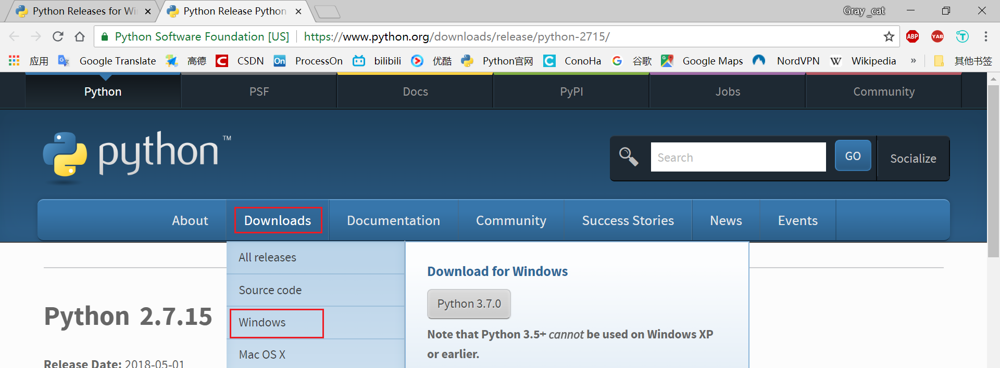
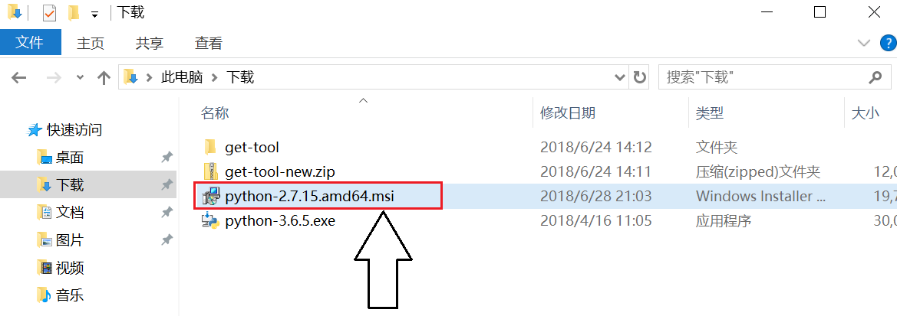
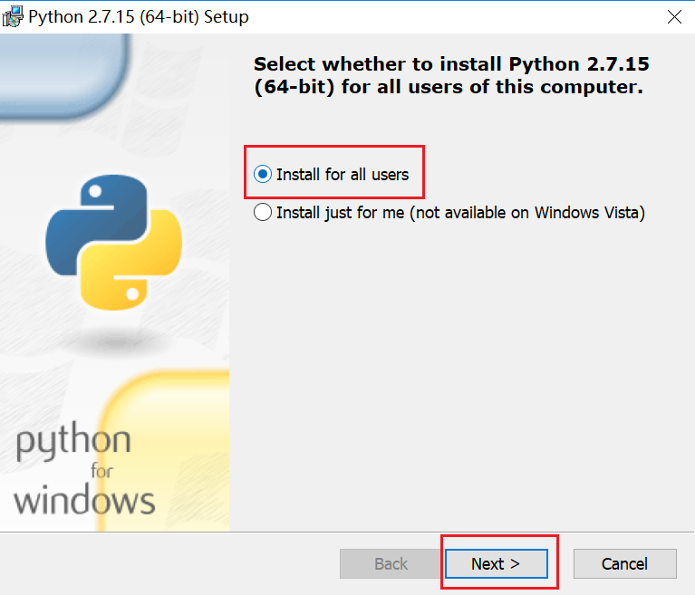
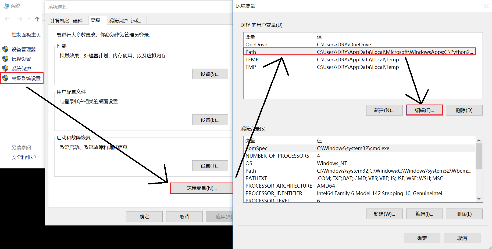
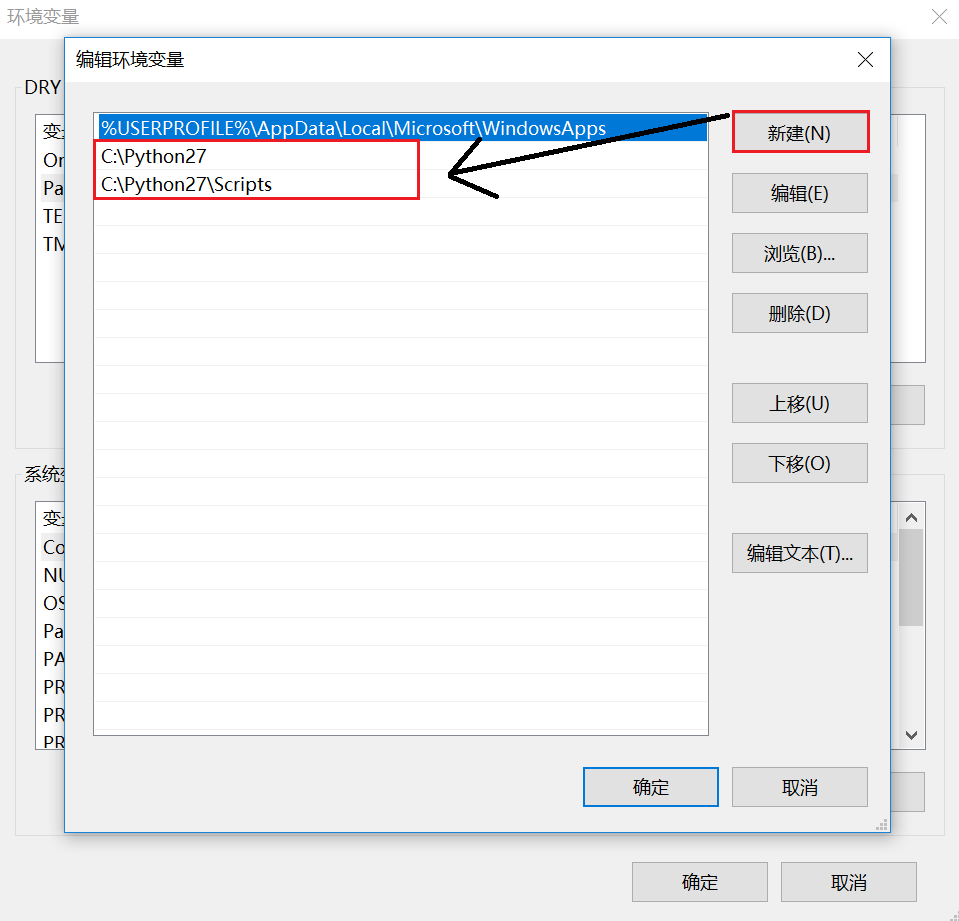
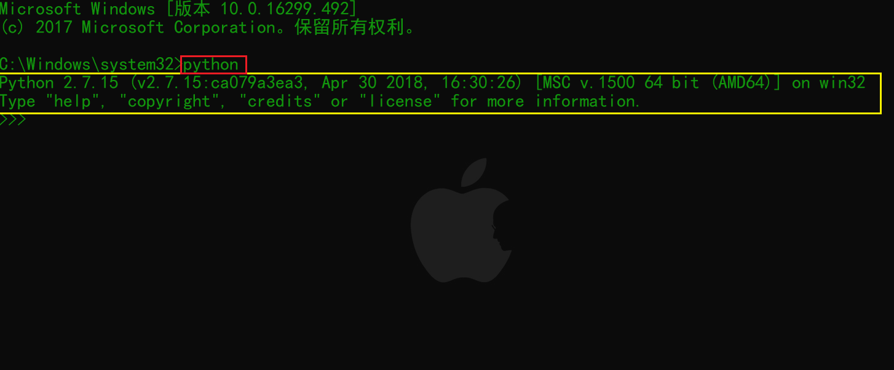

从前，车马很慢，书信很远，一生只够爱一个人。现在交通讯息都那么发达，我以为能多爱几个，结果还tm不如从前。 ——
木心并没说过
遥想当年，奶粉不含“特殊”添加剂，游戏不用充钱加特技,菊花就是个花，“卖肉”发不了家，手机鲜有诈骗电话，儿子不会被莫名绑架......如今，大家吐槽“人心不古”的同时纷纷想回到过去，试着让故事继续,至少不再让你离我而去...咳咳，然鹅，从前的一切并不都是nice的，起码从前的python安装是挺麻烦的。Windows下的python-2安装尤甚。没有对比就没有伤害，领略过python-3无痛安装的同学可能感觉它稍微有点烦。今天，就请大家随笔者的思路一起，走进不科学。
（一）安装python2.7x
1. 在python官网中按如下方式选择

2. 选择python2.7x版本
3. 根据需求下载合适版本的安装向导（笔者的选择如下）
4. 双击打开安装向导

5. 勾选方式如图

6. 继续默认就好
7. 等待中（要不来首歌听）
8. 你可以在C盘中找到此文件夹
（二）添加必要的路径到PATH
1. 右键此电脑，选择属性，之后如图

2. 如下图所示分别粘贴下列内容(前提是以上步骤和我一样)
C:\Python27
C:\Python27\Scripts

3. 在命令提示符中输入python检测以上步骤的正确性
